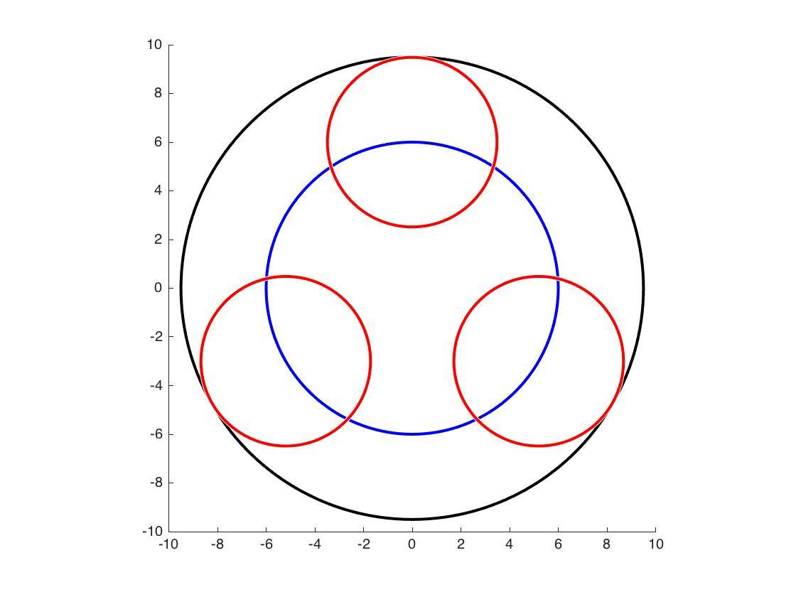
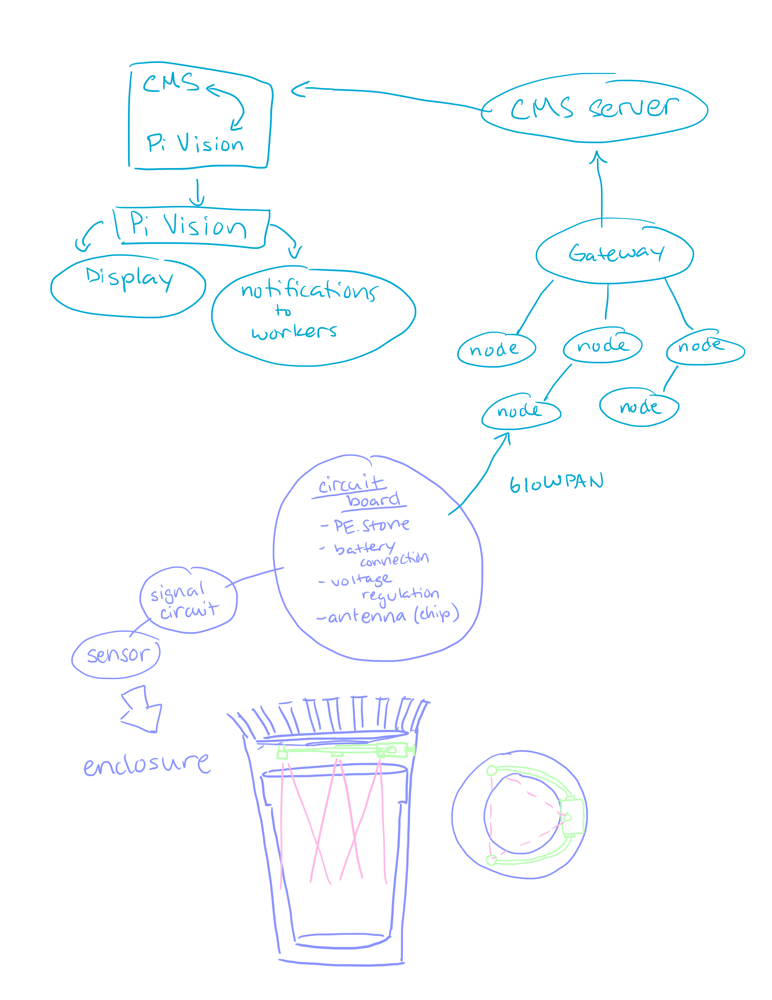
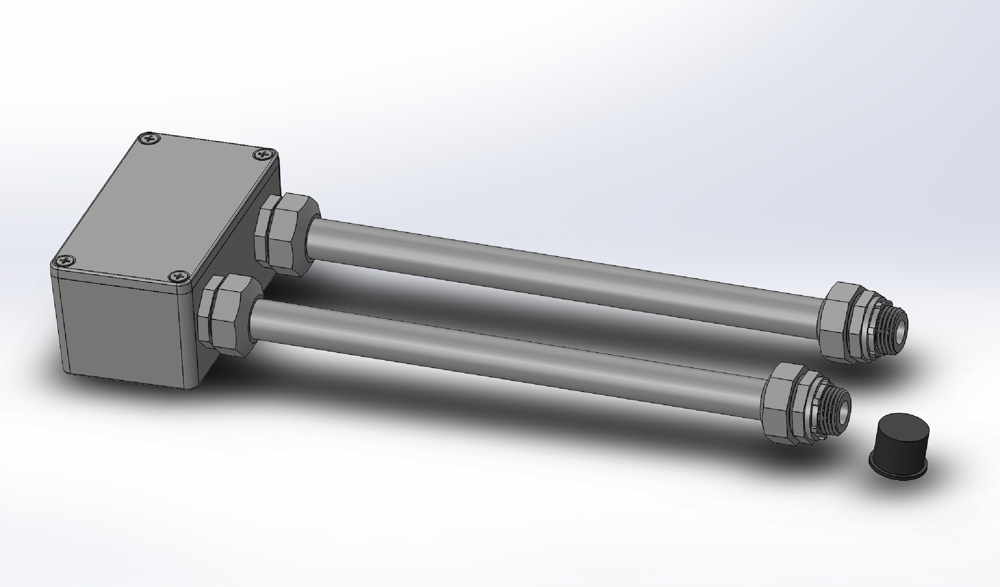
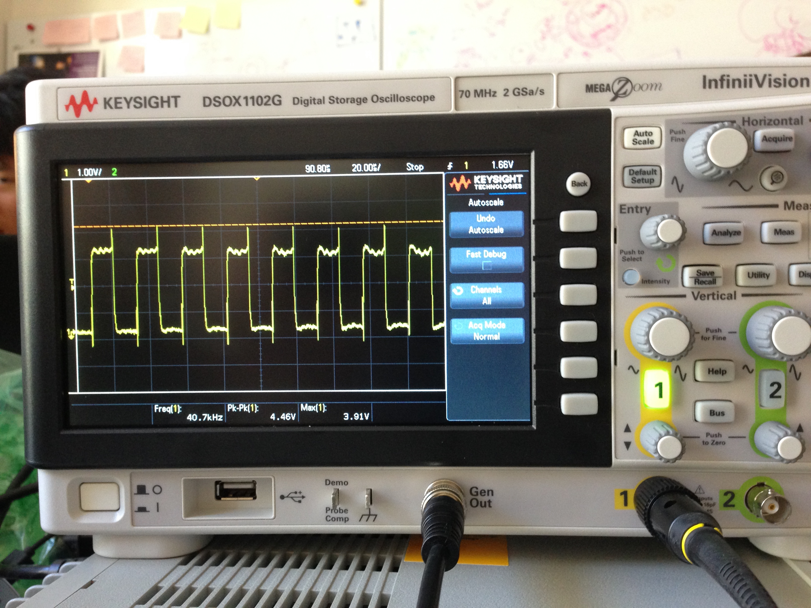
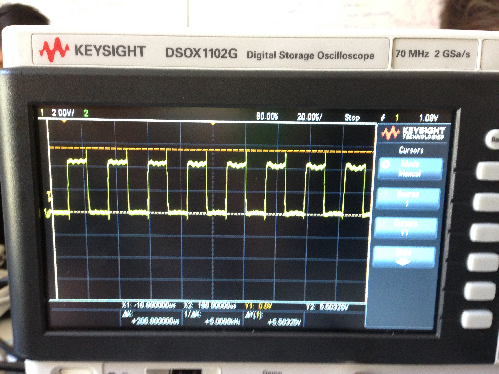

Week2
Monday May 29, 2017
Memorial Day Holiday, no work!
Tuesday May 30, 2017
Back on track! Today is a work day.
On the software side, we spent the day finding the parameters to use OSISoft for our project. We set up a Pi Server to play with Pi Vision. We ran into some troubles, so we are moving on to using ProcessBook for now to display the data that we obtain. We need to understand a little bit more about how to load data into a Pi Server to fully utilize OSISoft's software.
On the mathematical side, we tested and verified some equations to obtain maximum range of the sensors using MATLAB. The team agreed on using 3 sensors. It seems that using 3 sensors is the most optimal configuration for a balance of accuracy and cost. Using the circles below, we find that 3 heights can help us create a plane to determine how full the trash can is. During the day, we find that if we run into "out of range" values, which we will assume is an error.
On the engineering side, we made a cardboard cone to verify the purported 15 degree range from the data sheets. Tolerance and sweep testing were done to verify how stable the sensors are to see how the housing would be made. Here is our masterpiece below!

Wednesday May 31, 2017
- Had a meeting with Paradox engineers, and a new board was suggested instead of the PE.Stone development kit. More information to follow.
- Created a server running Windows Server 2012 on an old laptop. This is nice as Windows Server has a 180 day evaluation period (meaning free), and will suffice until other means can be worked out. In general, any server would be fine, but Windows Server is a requirement for some of the software that we will work with over the summer.
- Revisiting of the sensor problem. This is be a reoccurring thing, as it is an important thing. The team is currently working on shielding and waterproofing methods. Inspiration has come in the form of a repurposed car parking sensor. It was known to be waterproof and cheap, so the benefits of reverse engineering are endless. Silicone surrounds the sensor in an attempt for this waterproofing and to allow the speaker to actually vibrate in the casing. In all attempts to waterproof our sensors, the signal that the trigger fired was either too weak or the casing was not waterproof.
Thursday June 1, 2017
- Today, the team learned to use KiCAD to design custom PCBs. We figured out how to design custom parts as well as assign the circuitry to each of these. This will help us out with designing our own microprocessor that will be unique to our circuit.
- The software side of the team managed to set up a server in order to deisplay the fill levels of the trash can. The next step would be to set up the authentication for access to the server.
- The engineering side made progress on the housing of the unit. There will be a lot of waterproofing to be done, but our main problem would be the manufacturing. We are not sure whether plastic or metals would be better for this step. We are making a small number of units, so we cannot invest in something such as injection molding. We will begin by designing the housing using CAD software, then 3D printing the model for further study. We are also ordering some stock parts/enclosures that might offer insight into designing the housing.
Friday June 2, 2017
Today we had a meeting with OSIsoft to discuss the use of their software with our data analysis and display. The meeting was very helpful because it gave us insight into how our data may be analyzed, and how it will interface with the information from the 6LoWPAN network and its data server.
During our meeting with OSIsoft, we received a couple good points of advice:
- Consider recording data on what nodes our data packets are carried through to look at signal strenghts and network health.
- When sampling data, make sure to have the sample rate, and data transfer rates as seperate entities so that we can have flexibility later.
- Might have to convert data file from UFL to REST.
- We should use PI Vision, which also has mobile support for interfaces and can be used as graphics for our data display.
The general layout of our system is as follows:
On the software side, we are working on connecting to the Asset Server and sending data over the server.
We also have a very rough, general, prototype for the enclosure of our circuit board, batteries, and other electronics.
We met with a Harvey Mudd College professor today, and he helped us confirm the use of a waterproof ultrasonic distance sensor. Once we decided on the sensor, we began testing the sensor with different input signals to get a better understanding of how it transmits and receives signals.
Some testing was done for the HC-SR04 to see what the output of the transmitters looks like when a 3V input is given.
 